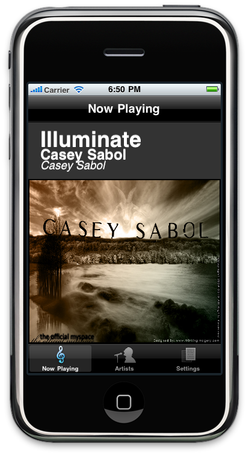
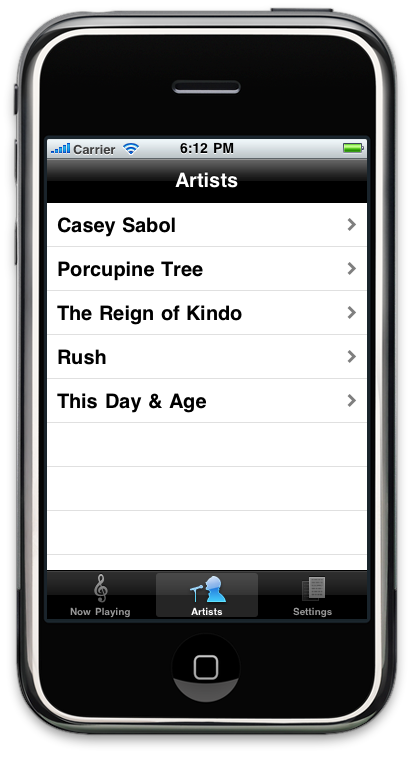
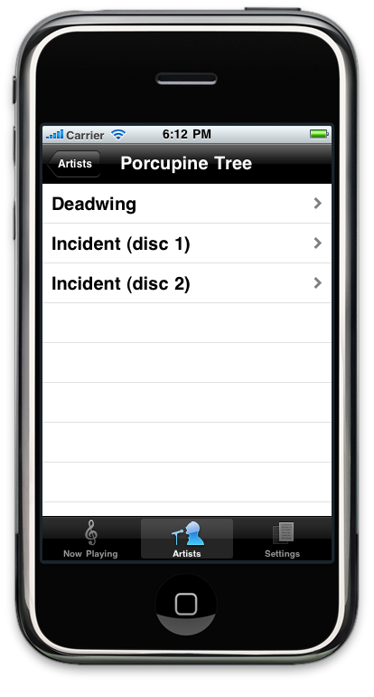
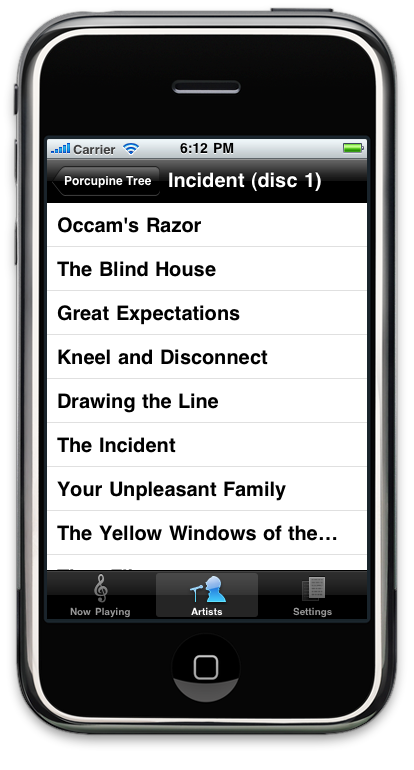
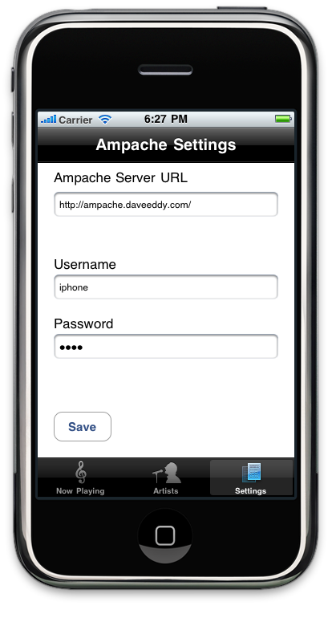
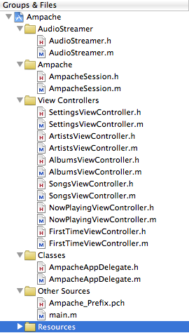

Ampache Client for iOS devices
All code written by me for this project is released under the BSD license in hopes that somebody will pick up this project, be able to benefit from it, and make this app something good!
The Ampache iPhone Client is a music player/streaming app for the iPhone. This app is a front-end to an open-source web service that catalogs and indexes your music collection, and allows it to be streamed anywhere over the Internet.
The web service is called Ampache (http://ampache.org) and it can be run on your own personal computer/server running a webserver. At the core, Ampache is just PHP files that hook into a MySQL database. Ampache has an API that works using xmlrpc commands, and my goal is to be able to communicate with the server using the iPhone, and create a nice iPod-style app for Ampache.
This app is for people who have more music than their iPhone will hold, or people who are already using Ampache. Ampache's catalog is limited only to the amount of hard drive space you have on your server, so the iPhone can now access all of your music that wouldn't fit on the iPhone.
This app is also great because a user can get an mp3 file, drop it in their server (remotely), and then the Ampache iPhone app will pick it up without having to be synced to the iPhone.
Some of the stand-out features of the Ampache iPhone Client.
iAmpache is a free app in the appstore now that accomplishes the same goal as this application: streaming music from an Ampache server anywhere in the world. I have used this app, but found it lacking in certain areas. iAmpache is limited in that it will not stream unless the user is on WiFi. Although this restriction is probably set by Apple in order for the app to be accepted into the app store, I still view this as a limitation and want my App to work whenever the user has any access to the internet.
At the time of this writing, iAmpache also does not cache any of the information it pulls from the server. Everytime the user starts iAmpache, the whole list of Artists is pulled from the server, which can take time compared to caching the data locally, and querying the server to see if the catalog has been updated (because if it hasn't there is no reason to pull the list from the server).
I have also noticed that after using iAmpache for ~30 minutes, it typically causes my phone to crash (3GS). I'm assuming there are some memory leaks going undetected in the app.
http://ampache.org/blog/2010/06/03/new-android-client-for-ampache-lullaby-in-the-market-now/
Lullaby mimics the interface of the default android Music player app, and implements a complete lazy loading interface
Where iAmpache implements no lazy loading at all, by blocking the UI completely, Lullay implements it without alerting the user of anything, so sometimes you click something and you are not sure if it is working or not. It implements a caching mechanism to decrease the loading times, and natively runs in the background.
Using it is simple, and is very easy after using the Android Music App. It does not watch for key events however. For instance, when the user pulls the headphones out, the music will continue to play out of the built in speaker (whereas the default behavior should be to pause it).
The Interface is simple enough to understand, an early version of the Application can be seen below.
The album art can be slid with the users finger up to reveal the playback controls, like play, pause, next, previous, progress bar, etc.




Finally clicking a song will load the "Now Playing" screen which will show the current song, the time elapsed of the song, and the previous, pause, and next buttons.
This screen shows what this program needs to know in order to authenticate to the server. The username, password, and the servers URL.

The classes used in this project can be seen in this screenshot of Xcode

The AudioStreamer class I used was taken from this site https://github.com/mattgallagher/AudioStreamer. This class is released under a free open-source license that allows it to be used in both commercial and personal applications, so long as the license stays in the source code, and attribution is appreciated but not required. This class makes it easy to pass a URL to an mp3 stream to it, and play the song in a background thread that keeps communication open by using NSNotifications. Streaming mp3s on the iPhone proved to not be a simple task, and in investigating the competition I found that this AudioStreamer class was used in the iAmpache client (by investigating the error messages), and that it was used in all of the SubSonic clients (the Ampache competition).
This is a class that I wrote myself for use with communicating to Ampache via the API. This class is able to authenticate to the server and hold the authentication token that the server gives, and then query Ampache for the music inside the server. This class uses NSXMLParser under the hood to take the responses from the server and present them to the user in a meaningful way. This class also takes care of starting and stopping the spinning activity indicator when a connection is made and completed to the Ampache server. Because of the nature of the XML Parser (being event driven), this class could easily be extended to allow for all communications with the Ampache API.
For this project I went above and beyond in the Now Playing View controller. When the view controller is loaded as a result of a song being selected, it loads the song information into labels for the user to see, and then loads the "blank album" album art. Now, using NSURLConnection and non-blocking techniques, I query Ampache for the album art of the current song and load it in the background. When the album art is fully loaded it will take over the default "no album art found" picture, so it does not block the user input at all.
Also, in the now playing view controller, I watch for touch events from the user. If the user swipes up or down it will slide the album art up or down, revealing extra information about the song. The default view will have the song information on the top, and the album art below it. If the user swipes the album art up, the song information will be covered and a progress bar will be revealed showing the current position in the song and the time elapsed.
I have written a plugin for wordpress, and a module for drupal that can be used to display your currently playing song on Ampache
Demos can be seen here:
Modules can be downloaded here
http://wordpress.org/extend/plugins/ampachenowplaying/ (Approved)
https://launchpad.net/ampachenowplaying-drupal (Not Yet Approved)
I worked until I had every feature I wanted in this app, and the user interface was easily navigable to someone who has never used this app before. Because of this I consider this an A Project.